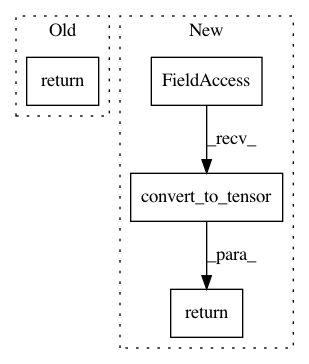

8cdbb1637b140c01f431831e7b2c2a63afc96209,kapre/backend.py,,filterbank_mel,#Any#Any#Any#Any#Any#Any#Any#,87
Before Change
def filterbank_mel(sr, n_freq, n_mels=128, fmin=0.0, fmax=None, htk=False, norm="slaney"):
[np]
return mel(
sr, (n_freq - 1) * 2, n_mels=n_mels, fmin=fmin, fmax=fmax, htk=htk, norm=norm
).astype(K.floatx())
def filterbank_log(
sr, n_freq, n_bins=84, bins_per_octave=12, fmin=None, spread=0.125
After Change
htk=htk,
norm=norm,
).astype(K.floatx())
return tf.convert_to_tensor(filterbank.T)
def filterbank_log(sample_rate, n_freq, n_bins=84, bins_per_octave=12, f_min=None, spread=0.125):
Approximate a constant-Q filter bank for a fixed-window STFT.
In pattern: SUPERPATTERN
Frequency: 3
Non-data size: 4
Instances
Project Name: keunwoochoi/kapre
Commit Name: 8cdbb1637b140c01f431831e7b2c2a63afc96209
Time: 2020-08-14
Author: gnuchoi+github@gmail.com
File Name: kapre/backend.py
Class Name:
Method Name: filterbank_mel
Project Name: keras-team/keras
Commit Name: c4d29cdf21abb94736781acc3c2d73ac6746e280
Time: 2019-03-05
Author: francois.chollet@gmail.com
File Name: keras/backend/tensorflow_backend.py
Class Name:
Method Name: moving_average_update
Project Name: keunwoochoi/kapre
Commit Name: 8cdbb1637b140c01f431831e7b2c2a63afc96209
Time: 2020-08-14
Author: gnuchoi+github@gmail.com
File Name: kapre/backend.py
Class Name:
Method Name: filterbank_log